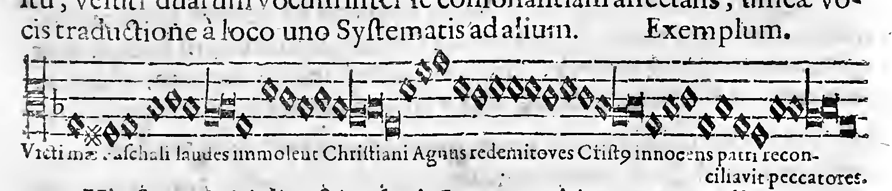

Caput XIII — Quid sit Cantus Naturaliter Concinnus & Aptus¶
CAPUT XIII.
Quid sit Cantus naturaliter Concinnus & aptus.
Nihil dicemus de stridulo illo more canendi, quo solent uti Turcae & Ungari pro classico suo: brutorum potius animantium voces inconditas, quàm humanam Naturam imitati.
Videtur omnino primus author hausisse melodiam hujusmodi inconditam ab instrumento minùs aptè conformato, eamque consuetudine diuturnâ, cum ipsâ instrumenti facturâ, transmisisse ad posteros, totámque gentem. Interfui Pragae precibus, quas Legati Turcici sacerdos horis statis ingeniculatus, terramque fronte crebro feriens, decantare solebat: apparuit facile, ipsum ex disciplina canere, exercitationémque & promptitudinem labore comparasse, nihil enim haesitavit; at intervallis usus est miris, insolitis, concisis, abhorrentibus, ut nemo proprio naturae ductu & ex seipso ultrò simile quid constanter unquam meditari posse videatur. Conabor aliquid proximè illi per nostras notas Musicas exprimere.
[Exemplum musicum cantilenae Turcicae.]
Concinnus igitur & humanarum aurium judicio aptus cantus est, qui exorsus à certo quodam sono: ab eo per intervalla concinna tendit ad sonos consonos & primò illi, & plerumque etiam inter se mutuò; dissona cursim pervolitans intervalla, in consonis verò immorans, seu mensurâ temporis, Syllabarumque longitudine, seu crebro ad illos reditu, veluti duarum vocum inter se consonantiam affectans, unicae vocis traductione à loco uno Systematis ad alium. Exemplum.


Hic sonus initialis est in clavi G, cum quâ in cantu molli concordant b. c. d. g. Excurrit igitur Cantus (primùm flexu deorsum facto) ad clavem c. consonam, & transilit planè dissonum locum A; fuisset autem idem, si attigisset ipsum, sed brevi mora; tota verò series reliqua potissimùm in locis b. d. g. intonat, sceleton octavae tale exprimens, in d. creberrimè rediens, post in b. in superius vero g. se interdum efferens, in haec omnia loca signanter: non sic in a., vel in f, loca primo dissona: tandemque redit ad G. ibique finit.
Circa traditam cantus definitionem multa veniunt nobis annotanda.
Partes Cantus, ex quibus vel omnibus vel aliquibus constat omnis Cantus, Euclides nominat has quatuor, Ἀγωγὴν, Τονὴν, Πεττείαν,
Πλοκὴν, quae quid sint, voces ipsae indicant. Ἀγωγὴ enim est traductio vocis à proposita radice ad locum usque radici consonum, aut ab uno consono, ad alium vel illi vel primae radici consonum. Τονὴ est commoratio in loco vel primo vel illi consono, vel etiam priori consono, licet primo non sit consonus. Πλοκὴ, implicatio, est species quaedam vel color ἀγωγῆς, ut πεττεία, lusitatio, τονῆς; & ut Ἀγωγὴ ad Τονὴν, sic πλοκὴ ad πεττείαν; quia ἀγωγὴ quasi directè transit, πλοκὴ vagatur in transitu circa ἀγωγὴν, ut canis, circa viatorem.
Itaque ἀγωγὴ est motus veluti directus, πλοκὴ motus varius: τονὴ verò est quasi terminus motus, seu quies in loco Systematis petito: πεττεία est multi termini minutiorum motuum, & veluti quietes. In exemplo nostro, Syllabae [demit oves Christus in;] perpetua quaedam sunt τονὴ, duabus solis Syllabis exceptis: at Syllabae [cens rec li peccat,] exprimunt πεττείαν. Quod si in hac cantilena ligaturas respicias Syllabarum, [laud an patr tor] easque ut bisonas consideres, tunc in eâ ἀγωγὴ mera & pura nulla erit. At si perpendas, rusticano more factum, ut ex sono qui productiùs erat canendus, factus sit bisonus assurgens in fine; & si syllabis hisce simplicem sonum productum, qui est ligaturae primus, restituas; invenies puram ἀγωγὴν in his [Paschali laudes] item, [immolent] item [Christiani] item [Innocens patri] & brevis in [catores] πλοκὴ verò mera, licet non naturalis, est in exemplo Turcico.
Quemadmodum igitur se habet sceleton ad corpus apud anatomicos, sic se habent in uno Systemate Octavae, soni consoni & inter se & cum radice vel basi octavae, ad ipsam melodiam seu cantum. Sicut enim caro implet sinus ossium, eaque vestit ad decorem; sic hae partes recensitae, implent sceleton octavae, praesertim ἀγωγὴ & πεττεία, per errantes loca dissona, inter consonos sonos interjecta, conformant & quasi corporant Melodiam.
Cùm cantus definitur sic, Quòd exordiatur à certo quodam sono, qui basis sit Systematis octavae; id non semper de actu est intelligendum; cùm enim delectet varietas, & serviat emphasi: saepissimè velut ex abrupto incipit melodia à clavi vel loco alio: potestate tamen subintelligitur principium quodpiam certù [certum] positum, quod ex toto Melodiae tractu undique enitescit: ut in hoc vetustissimo Germanico, facile intelligitur, etsi actu à d. fit initium; radicem tamen esse G.
[Exemplum musicum: Christ ist erstanden (in clavi F/C cum initio in d).]
Similem habet exceptionem, quòd cantus regularis dicitur cum sua τονῇ vel πεττείᾳ collimare ad loca consona radici Octavae. Nam frequenter hae partes in medio longioris melodiae tractu, versantur cir-
ca loca dissona à primâ radice; sed id fit varietatis causâ; estque perinde, ac si priori melodiae nova melodia misceretur, cujus in dissono illo novum quoddam figeretur initium, aut novum signaretur Octavae sceleton. Est velut excursus in Oratione seu digressio; itaque non commoramur in talibus, sed citò revertimur velut ad principale sceleton. Et quamdiu circà dissona versatur τονὴ & πεττεία; intelligimus, cantum nondum finiri; Nam in ipso vero fine redeundum est non tantum ad consona, regulariter quidem, sed etiam ad ipsam propriae octavae radicem. Ab hac articulatione cantus, & affectatione consonantiarum, veteres etiam simplicem cantum, Harmoniam dixisse videntur: non secus atque decens & aptus membrorum responsus, quae formae anima est, harmonia diceretur, quasi pulchritudo: fuit enim & faeminae nomen Harmonia.
Quòd Ἀγωγὴν attinet, ea rursum varia est; non semper enim actu omnia loca interjecta transit, sed saepe transsilit aliqua, saltuque fertur ab una ad consonantem illi; estque tunc solâ potestate ἀγωγὴ; & fere mera πεττεία vel τονὴ; qui mos est frequentissimus nostrorum Tubicinum, cùm classicum aut incentivum equestre modulantur: tunc enim ferè nihil nisi sceleton octavae auditur. Cogita an hujus generis fuerit ille veterum Νόμος ὄρθιος.
Cùm Concinnus cantus constet suis Elementis, quae sunt intervalla concinna, primùm illa sunt definienda accuratius.
Duplici namque sensu dicuntur intervalla concinna vel inconcinna. Primùm enim intervalla seorsim singula, respectu ortus sui, concinna vel inconcinna dicuntur, illa quidem, quae natura admittit in divisionibus intervallorum consonorum, haec verò, quae ex comparationibus Consonantiarum non resultant, aliena prorsus ab Harmonice, ut explicatum Cap. IV. Deinde respectu ipsius Cantus seu Melodiae, discrimen hoc est inter ipsa etiam Musices, seu primo sensu Concinna intervalla, quòd quaedam ex ijs, junctim considerata, quamvis Naturâ sint concinna, scilicet orta ex comparatione & abstractione harmoniarum, usu tamen à Melodijs certo respectu pro inconcinnis rejiciantur. Illum sensum praesupponunt & respiciunt τονὴ & πεττεία; hunc verò potissimum Ἀγωγὴ, tam actualis, quàm desultoria. Haec igitur inconcinna fiunt, rursum duobus nominibus: vel enim respectu Generis, aut sceleti Octavae, quòd ea planè in illo non usurpentur, neque forment illud; aut si alio disponantur ordine, quàm supra Capite VII. natura docuit; ut si quis vellet tria semitonia deinceps ordinare: semitonium quidem, primo sensu concinnum est, at hic ordo semitoniorum concinnus non est, hoc secundo sensu. Ita Diesis Naturâ concinna, est tamen vel in duro Genere cantus, vel in Molli, seorsim inconcinna: Vel denique non canuntur deinceps, nec licita sunt saltui vocis Melodicae, nec Ἀγωγῇ convenientia.
f. 0154 · p. 64Sunt igitur hoc secundo sensu inconcinna & vetita intervalla, his ut praecipuis legibus comprehensa.
Diesis ante vel post semitonium regulariter non canitur.
Duo semitonia licet deinceps ordinentur in ordine minimorum intervallorum Capitis VII. non possunt tamen tribus sonis deinceps cani, sed debent cum duobus alijs elementis in duos tonos coalescere.
Duo semitonia intra complexum unius quartae vel quintae, quae sit imo loco sceleti octavae, ordinariè non canuntur. Nam efficeretur, ut vox ordine quarta vel quinta, non consonaret cum primâ, neque perfectè neque imperfectè, itaque non esset quarta vel quinta verè.
Quatuor toni deinceps non canuntur, nisi in suprema Octavae parte, quando coloris & varietatis causâ, mutatur sceleton; non igitur ordinariè. [T. T. To. To.]
Septima & omnia dissona supra octavam, sonis post radicem deinceps ordinatis non canuntur ordinariè; nisi praecedens habeat quodammodo rationem finis, sequens rationem novi initij.
Sextas, etsi consonae, rariùs admittimus, & tantùm minores. [In me transierunt.]
Tetrachorda duo unius octavae, non existente eodem loco semitonij in eorum utroque, rariùs canuntur; scilicet coloris causâ, aut Syncopationum (de quibus capite XVI.) neque tamen libertas est mera locandi semitonij, restringitur enim ad eum locum quem admittit Genus Cantus.
Affine est hoc, quod tres Toni deinceps imo loco octavae non canuntur; at superius admittuntur legibus jam dictis.
Duo semitonia in unum tonum naturaliter non conflantur, licet sit parvum in auditu discrimen; ut si octava incipiat ab E. inter ce. de. fieret enim intervallum 225. 256. ex compositione quod naturaliter est inconcinnum, vide Cap. IV.
In genere omne Octavae Systema est inconcinnum, quod non statuit & Diatessaron & Diapente infra.
Harum legum pleraeque jam nobis servient in constituendo numero Tonorum Cap. sequenti.
Quantum attinet ad illud membrum definitionis, Dissona cursim pervolitans, in consonis immorans: etsi non est instituti mei in opere isto, de mensuris disputare: illud tamen in genere moneo, praecipuam esse gratiam cantus Harmonici in mensuratione. Nam quod generalissimè dictum est, Dissona cursim &c. id in specie sic verum efficitur. Primùm Latini habent distinctionem inter longam & brevem Syllabam, quarum hanc faciunt unius, illam duorum Temporum, et sic longitudinis duplae. Quanquam hodie non carmina tantùm, sed etiam prosa canitur; in qua penitus negligitur ab hodiernis musicis distinctio longae & brevis Syllabae; respicitur verò unicè ad morem pronunciandi, quamvis is hodie sit corruptus; habeturque pro longâ Syllabâ, quaecunque cum accentu acuto solet proferri, pro brevi, quae cum gravi.
Id non mirum in Latina lingua fieri, cùm idem etiam Graeci posteriores fecerint; qui quamvis purè scriberent, pronunciationem tamen vitiosissimam sunt amplexati, in qua nulla amplius est distinctio accentus acuti à Syllabae longitudine, gravis à brevitate, cùm tamen ad hoc signis abundent, quae apud Latinos non tam frequenti in usu habentur. Itaque Graeci abrogato more pangendi carmen, ab aliquot jam saeculis coeperunt scribere versus Politicos dictos; in quibus Syllabae numerantur non mensurantur, obtinetque versus penultimam, non quae natura longa est, sed quae accentu acuitur in sermone populari. Id igitur imitantur etiam in Latina nostri Musici; adeò ut ne carminibus quidem, nisi perrarò, nec unquam in totum parcant: credo quia dupla & tripla perpetua in Cantibus est recepta: cùm carmina has inaequaliter misceant, excepto Hexametro, quod proportione aequalitatis in spondaeo, & duplâ perfectâ in dactylo contentum est. Brevem igitur syllabam, aut quae est loco brevis, quando spondaeus succedit jambo, & in genere syllabam cum accentu proferendam, Musici deputant dissono sono, si per illum sit transeundum, longam consonis, vel quasi.
Secundò linguae Ionicae, quae Rhythmo utuntur Teutonica, Gallica, Hispanica, Italica, faciunt vel ultimam Carminis acutam vel penultimam, efferuntque totum versum sic, ac si alternis acuta vel gravis syllabae se mutuò insequantur, sive sit hoc, ut in apto Teutonico versu, sive non sit, ut crebrò in Gallicis. Itaque omnis illorum versus aut Trochaico similis est, aut Iambico, ijsque aut Acatalectis Schöpffer Himmels und der Erden. Nun bitten wir den Heylgen Geist. aut catalectis. Deß sich wundert alle Welt. Er ist der Morgensterne. Igitur Musici sonis dissonis sedem in gravibus vel correptis syllabis figunt, Consonis in acutis.
Tertiò, cùm verò cantus accipit mensuram non à Syllabis textus, sed à Tactu; atque is vel duplam sequitur proportionem vel triplam; primam quidem tactus partem Consonis, posteriorem, & in tripla breviorem, quae significatur elevatione manus, dissonis potissimùm reservant:
f. 0156 · p. 66caventque quantum fieri potest, ne primum tactus semissem alia occupet syllaba, quàm quae est acutè proferenda, neve longae binae in ultimam tactus partem intrudantur.